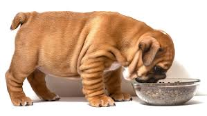
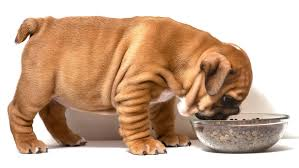

Causas principales
Si tu perro ha perdido el apetito, podría haber muchas razones. Aquí hay algunas causas comunes:
- Estrés o ansiedad - Cambios en el hogar o el entorno.
- Cambio de comida - Tu perro puede estar aburrido o no le gusta la nueva comida.
- Problemas de salud - Enfermedades como infecciones o parásitos.
- Problemas dentales - Dolor al comer debido a dientes o encías afectadas.
- Vejez - Los perros mayores a menudo tienen menos apetito.
- Tratamiento veterinario - Medicamentos o cirugías recientes pueden afectar el apetito.
¿Qué puedo hacer?
- Consulta con el veterinario para descartar problemas médicos graves.
- Prueba diferentes tipos de comida: alimento húmedo o casero.
- Asegúrate de que tu perro esté en un entorno tranquilo y sin estrés durante la comida.
- Mantén una rutina diaria para la alimentación y ejercicio.
- Si sospechas problemas dentales, revisa sus dientes y lleva a tu perro al veterinario.
Preguntas Frecuentes
¿Es normal que los perros se aburran de la comida?
¿Qué hacer si mi perro no come por varios días?
¿Debo cambiar la comida de mi perro de golpe?
Galería de imágenes

 
